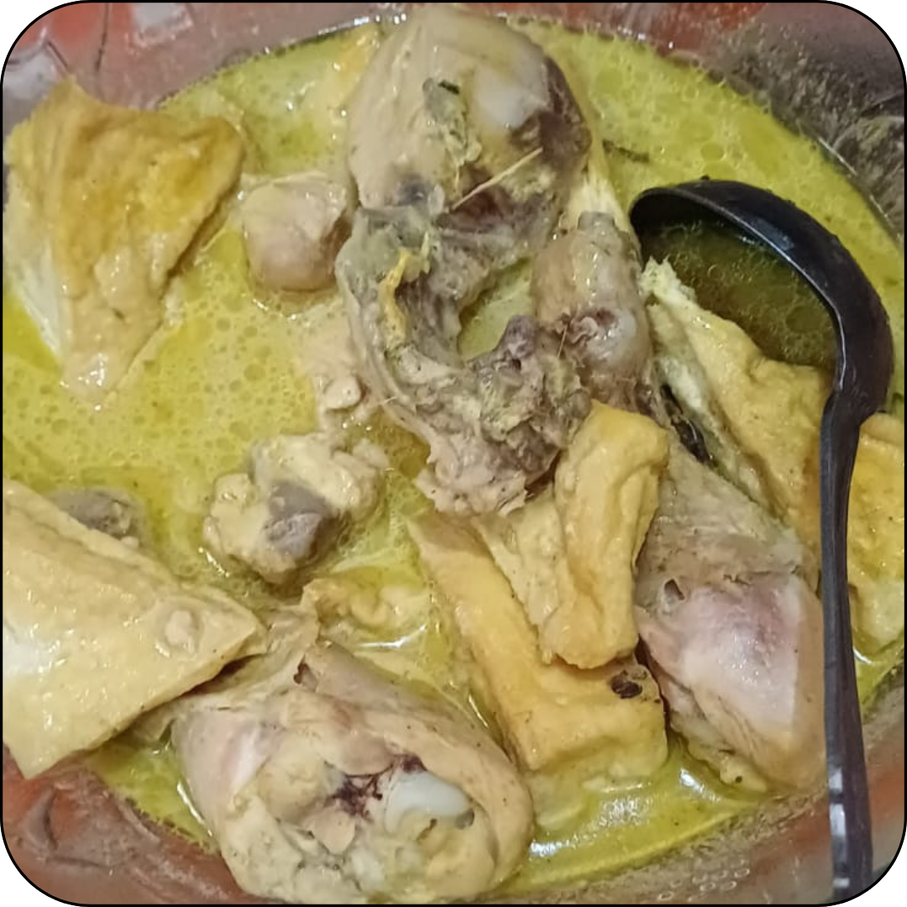
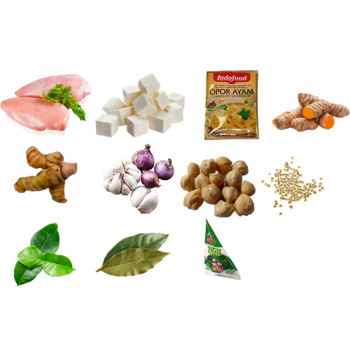

Opor Ayam

Bahan:
- Ayam
- Tahu
- 1/2 Kunyit
- 1/2 Lengkuas / Laos
- Bawang Putih
- Bawang Merah
- Kemiri
- 1 Ketumbar
- 2 Daun Jeruk
- 2 Daun Salam
- Indofood Opor
- 1 Santan Kara
- Gula

Cara Membuat:
- Rebus ayam lalu buang air cuci ayamnya
- Isi air untuk kaldu, lalu rebus
- Santan: Rebus air hingga hangat, masukkan santan dan aduk hingga rata
- Ulek baput, bamer, kunyit, kemiri, dan ketumbar. Geprek lengkuas
- Tumis bumbu sebelumnya, masukkan daun jeruk, daun salam, dan lengkuas
- Masukkan bumbu Indofood
- Masukkan tahu dan ayam yang sudah direbus. Tambahkan air kaldu
- Pindah ke panci jika mau
- Masukkan air santan, rasakan
- Tambahkan garam, gula, dan penyedap rasa secukupnya